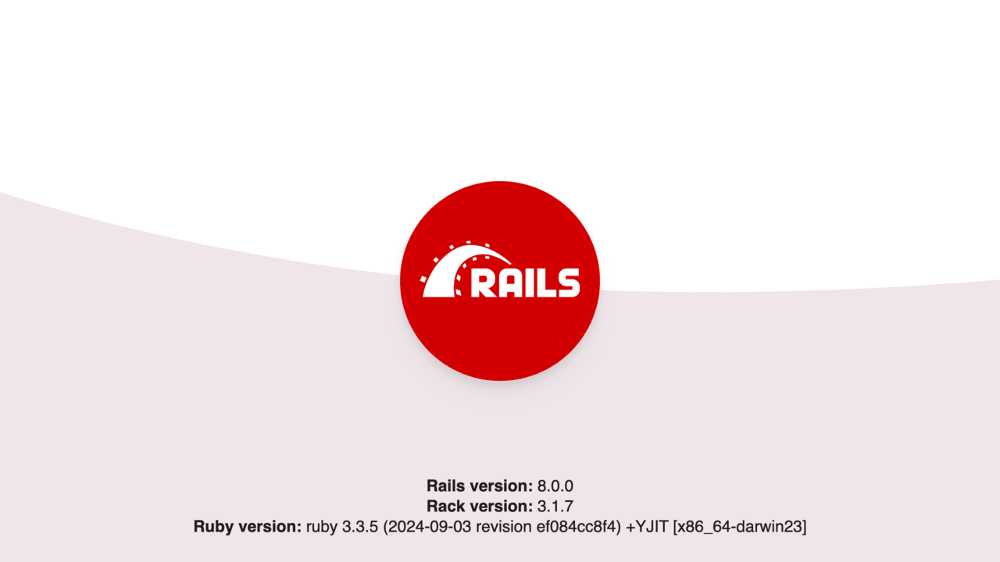

DO NOT READ THIS FILE ON GITHUB, GUIDES ARE PUBLISHED ON https://guides.rubyonrails.org.
Getting Started with Rails
This guide covers getting up and running with Ruby on Rails.
After reading this guide, you will know:
- How to install
Rails, create a newRailsapplication, and connect your application to a database. - The general layout of a
Railsapplication. - The basic principles of MVC (Model, View, Controller) and RESTful design.
- How to quickly generate the starting pieces of a
Railsapplication. - How to deploy your app to production using Kamal.
Introduction
Welcome to Ruby on Rails! In this guide, we'll walk through the core concepts of
building web applications with Rails. You don't need any experience with Rails
to follow along with this guide.
Rails is a web framework built for the Ruby programming language. Rails takes
advantage of many features of Ruby so we strongly recommend learning the
basics of Ruby so that you understand some of the basic terms and vocabulary you
will see in this tutorial.
- Official Ruby Programming Language website
- [List of Free Programming Books]#ruby)
Rails Philosophy
Rails is a web application development framework written in the Ruby programming
language. It is designed to make programming web applications easier by making
assumptions about what every developer needs to get started. It allows you to
write less code while accomplishing more than many other languages and
frameworks. Experienced Rails developers also report that it makes web
application development more fun.
Rails is opinionated software. It makes the assumption that there is a "best"
way to do things, and it's designed to encourage that way - and in some cases to
discourage alternatives. If you learn "The Rails Way" you'll probably discover a
tremendous increase in productivity. If you persist in bringing old habits from
other languages to your Rails development, and trying to use patterns you
learned elsewhere, you may have a less happy experience.
The Rails philosophy includes two major guiding principles:
- Don't Repeat Yourself: DRY is a principle of software development which states that "Every piece of knowledge must have a single, unambiguous, authoritative representation within a system". By not writing the same information over and over again, our code is more maintainable, more extensible, and less buggy.
- Convention Over Configuration:
Railshas opinions about the best way to do many things in a web application, and defaults to this set of conventions, rather than require that you define them yourself through endless configuration files.
Creating a New Rails App
We're going to build a project called store - a simple e-commerce app that
demonstrates several of Rails' built-in features.
TIP: Any commands prefaced with a dollar sign $ should be run in the terminal.
Prerequisites
For this project, you will need:
- Ruby 3.2 or newer
Rails8.0.0 or newer- A code editor
Follow the Install Ruby on Rails Guide if you need
to install Ruby and/or Rails.
Let's verify the correct version of Rails is installed. To display the current
version, open a terminal and run the following. You should see a version number
printed out:
$ rails --version
Rails 8.0.0
The version shown should be Rails 8.0.0 or higher.
Creating Your First Rails App
Rails comes with several commands to make life easier. Run rails --help to see
all of the commands.
rails new generates the foundation of a fresh Rails application for you, so
let's start there.
To create our store application, run the following command in your terminal:
$ rails new store
NOTE: You can customize the application Rails generates by using flags. To see
these options, run rails new --help.
After your new application is created, switch to its directory:
$ cd store
Directory Structure
Let's take a quick glance at the files and directories that are included in a
new Rails application. You can open this folder in your code editor or run
ls -la in your terminal to see the files and directories.
| File/Folder | Purpose |
|---|---|
| app/ | Contains the controllers, models, views, helpers, mailers, jobs, and assets for your application. You'll focus mostly on this folder for the remainder of this guide. |
| bin/ | Contains the rails script that starts your app and can contain other scripts you use to set up, update, deploy, or run your application. |
| config/ | Contains configuration for your application's routes, database, and more. This is covered in more detail in Configuring Rails Applications. |
| config.ru | Rack configuration for Rack-based servers used to start the application. |
| db/ | Contains your current database schema, as well as the database migrations. |
| Dockerfile | Configuration file for Docker. |
| Gemfile Gemfile.lock |
These files allow you to specify what gem dependencies are needed for your Rails application. These files are used by the Bundler gem. |
| lib/ | Extended modules for your application. |
| log/ | Application log files. |
| public/ | Contains static files and compiled assets. When your app is running, this directory will be exposed as-is. |
| Rakefile | This file locates and loads tasks that can be run from the command line. The task definitions are defined throughout the components of Rails. Rather than changing Rakefile, you should add your own tasks by adding files to the lib/tasks directory of your application. |
| README.md | This is a brief instruction manual for your application. You should edit this file to tell others what your application does, how to set it up, and so on. |
| script/ | Contains one-off or general purpose scripts and benchmarks. |
| storage/ | Contains SQLite databases and Active Storage files for Disk Service. This is covered in Active Storage Overview. |
| test/ | Unit tests, fixtures, and other test apparatus. These are covered in Testing Rails Applications. |
| tmp/ | Temporary files (like cache and pid files). |
| vendor/ | A place for all third-party code. In a typical Rails application this includes vendored gems. |
| .dockerignore | This file tells Docker which files it should not copy into the container. |
| .gitattributes | This file defines metadata for specific paths in a Git repository. This metadata can be used by Git and other tools to enhance their behavior. See the gitattributes documentation for more information. |
| .git/ | Contains Git repository files. |
| .github/ | Contains GitHub specific files. |
| .gitignore | This file tells Git which files (or patterns) it should ignore. See GitHub - Ignoring files for more information about ignoring files. |
| .kamal/ | Contains Kamal secrets and deployment hooks. |
| .rubocop.yml | This file contains the configuration for RuboCop. |
| .ruby-version | This file contains the default Ruby version. |
Model-View-Controller Basics
Rails code is organized using the Model-View-Controller (MVC) architecture. With MVC, we have three main concepts where the majority of our code lives:
- Model - Manages the data in your application. Typically, your database tables.
- View - Handles rendering responses in different formats like HTML, JSON, XML, etc.
- Controller - Handles user interactions and the logic for each request.

Now that we've got a basic understanding of MVC, let's see how it's used in Rails.
Hello, Rails!
Let's start easy and boot up our Rails server for the first time.
In your terminal, run the following command in the store directory:
$ bin/rails server
NOTE: When we run commands inside an application directory, we should use
bin/rails. This makes sure the application's version of Rails is used.
This will start up a web server called Puma that will serve static files and your Rails application:
=> Booting Puma
=> Rails 8.0.0 application starting in development
=> Run `bin/rails server --help` for more startup options
Puma starting in single mode...
* Puma version: 6.4.3 (ruby 3.3.5-p100) ("The Eagle of Durango")
* Min threads: 3
* Max threads: 3
* Environment: development
* PID: 12345
* Listening on http://127.0.0.1:3000
* Listening on http://[::1]:3000
Use Ctrl-C to stop
To see your Rails application, open http://localhost:3000 in your browser. You will see the default Rails welcome page:

It works!
This page is the smoke test for a new Rails application, ensuring that everything is working behind the scenes to serve a page.
To stop the Rails server anytime, press Ctrl-C in your terminal.
Autoloading in Development
Developer happiness is a cornerstone philosophy of Rails and one way of achieving this is with automatic code reloading in development.
Once you start the Rails server, new files or changes to existing files are detected and automatically loaded or reloaded as necessary. This allows you to focus on building without having to restart your Rails server after every change.
You may also notice that Rails applications rarely use require statements like
you may have seen in other programming languages. Rails uses naming conventions
to require files automatically so you can focus on writing your application
code.
See Autoloading and Reloading Constants for more details.
Creating a Database Model
Active Record is a feature of Rails that maps relational databases to Ruby code. It helps generate the structured query language (SQL) for interacting with the database like creating, updating, and deleting tables and records. Our application is using SQLite which is the default for Rails.
Let's start by adding a database table to our Rails application to add products to our simple e-commerce store.
$ bin/rails generate model Product name:string
This command tells Rails to generate a model named Product which has a name
column and type of string in the database. Later on, you'll learn how to add
other column types.
You'll see the following in your terminal:
invoke active_record
create db/migrate/20240426151900_create_products.rb
create app/models/product.rb
invoke test_unit
create test/models/product_test.rb
create test/fixtures/products.yml
This command does several things. It creates...
- A migration in the
db/migratefolder. - An Active Record model in
app/models/product.rb. - Tests and test fixtures for this model.
NOTE: Model names are singular, because an instantiated model represents a single record in the database (i.e., You are creating a product to add to the database.).
Database Migrations
A migration is a set of changes we want to make to our database.
By defining migrations, we're telling Rails how to change the database to add, change, or remove tables, columns or other attributes of our database. This helps keep track of changes we make in development (only on our computer) so they can be deployed to production (live, online!) safely.
In your code editor, open the migration Rails created for us so we can see what
the migration does. This is located in
db/migrate/<timestamp>_create_products.rb:
class CreateProducts < ActiveRecord::Migration[8.0]
def change
create_table :products do |t|
t.string :name
t.
end
end
endThis migration is telling Rails to create a new database table named products.
NOTE: In contrast to the model above, Rails makes the database table names plural, because the database holds all of the instances of each model (i.e., You are creating a database of products).
The create_table block then defines which columns and types should be defined
in this database table.
t.string :name tells Rails to create a column in the products table called
name and set the type as string.
t.timestamps is a shortcut for defining two columns on your models:
created_at:datetime and updated_at:datetime. You'll see these columns on
most Active Record models in Rails and they are automatically set by Active
Record when creating or updating records.
Running Migrations
Now that you have defined what changes to make to the database, use the following command to run the migrations:
$ bin/rails db:migrate
This command checks for any new migrations and applies them to your database. Its output looks like this:
== 20240426151900 CreateProducts: migrating ===================================
-- create_table(:products)
-> 0.0030s
== 20240426151900 CreateProducts: migrated (0.0031s) ==========================
TIP: If you make a mistake, you can run bin/rails db:rollback to undo the last
migration.
Rails Console
Now that we have created our products table, we can interact with it in Rails. Let's try it out.
For this, we're going to use a Rails feature called the console. The console is a helpful, interactive tool for testing our code in our Rails application.
$ bin/rails console
You will be presented with a prompt like the following:
Loading development environment (Rails 8.0.0)
store(dev)>
Here we can type code that will be executed when we hit Enter. Let's try
printing out the Rails version:
store(dev)> Rails.version
=> "8.0.0"
It works!
Active Record Model Basics
When we ran the Rails model generator to create the Product model, it created
a file at app/models/product.rb. This file creates a class that uses Active
Record for interacting with our products database table.
class Product < ApplicationRecord
endYou might be surprised that there is no code in this class. How does Rails know what defines this model?
When the Product model is used, Rails will query the database table for the
column names and types and automatically generate code for these attributes.
Rails saves us from writing this boilerplate code and instead takes care of it
for us behind the scenes so we can focus on our application logic instead.
Let's use the Rails console to see what columns Rails detects for the Product model.
Run:
store(dev)> Product.column_names
And you should see:
=> ["id", "name", "created_at", "updated_at"]
Rails asked the database for column information above and used that information
to define attributes on the Product class dynamically so you don't have to
manually define each of them. This is one example of how Rails makes development
a breeze.
Creating Records
We can instantiate a new Product record with the following code:
store(dev)> product = Product.new(name: "T-Shirt")
=> #<Product:0x000000012e616c30 id: nil, name: "T-Shirt", created_at: nil, updated_at: nil>
The product variable is an instance of Product. It has not been saved to the
database, and so does not have an ID, created_at, or updated_at timestamps.
We can call save to write the record to the database.
store(dev)> product.save
TRANSACTION (0.1ms) BEGIN immediate TRANSACTION /*application='Store'*/
Product Create (0.9ms) INSERT INTO "products" ("name", "created_at", "updated_at") VALUES ('T-Shirt', '2024-11-09 16:35:01.117836', '2024-11-09 16:35:01.117836') RETURNING "id" /*application='Store'*/
TRANSACTION (0.9ms) COMMIT TRANSACTION /*application='Store'*/
=> true
When save is called, Rails takes the attributes in memory and generates an
INSERT SQL query to insert this record into the database.
Rails also updates the object in memory with the database record id along with
the created_at and updated_at timestamps. We can see that by printing out
the product variable.
store(dev)> product
=> #<Product:0x00000001221f6260 id: 1, name: "T-Shirt", created_at: "2024-11-09 16:35:01.117836000 +0000", updated_at: "2024-11-09 16:35:01.117836000 +0000">
Similar to save, we can use create to instantiate and save an Active Record
object in a single call.
store(dev)> Product.create(name: "Pants")
TRANSACTION (0.1ms) BEGIN immediate TRANSACTION /*application='Store'*/
Product Create (0.4ms) INSERT INTO "products" ("name", "created_at", "updated_at") VALUES ('Pants', '2024-11-09 16:36:01.856751', '2024-11-09 16:36:01.856751') RETURNING "id" /*application='Store'*/
TRANSACTION (0.1ms) COMMIT TRANSACTION /*application='Store'*/
=> #<Product:0x0000000120485c80 id: 2, name: "Pants", created_at: "2024-11-09 16:36:01.856751000 +0000", updated_at: "2024-11-09 16:36:01.856751000 +0000">
Querying Records
We can also look up records from the database using our Active Record model.
To find all the Product records in the database, we can use the all method.
This is a class method, which is why we can use it on Product (versus an
instance method that we would call on the product instance, like save above).
store(dev)> Product.all
Product Load (0.1ms) SELECT "products".* FROM "products" /* loading for pp */ LIMIT 11 /*application='Store'*/
=> [#<Product:0x0000000121845158 id: 1, name: "T-Shirt", created_at: "2024-11-09 16:35:01.117836000 +0000", updated_at: "2024-11-09 16:35:01.117836000 +0000">,
#<Product:0x0000000121845018 id: 2, name: "Pants", created_at: "2024-11-09 16:36:01.856751000 +0000", updated_at: "2024-11-09 16:36:01.856751000 +0000">]
This generates a SELECT SQL query to load all records from the products
table. Each record is automatically converted into an instance of our Product
Active Record model so we can easily work with them from Ruby.
TIP: The all method returns an ::ActiveRecord::Relation object which is an
Array-like collection of database records with features to filter, sort, and
execute other database operations.
Filtering & Ordering Records
What if we want to filter the results from our database? We can use where to
filter records by a column.
store(dev)> Product.where(name: "Pants")
Product Load (1.5ms) SELECT "products".* FROM "products" WHERE "products"."name" = 'Pants' /* loading for pp */ LIMIT 11 /*application='Store'*/
=> [#<Product:0x000000012184d858 id: 2, name: "Pants", created_at: "2024-11-09 16:36:01.856751000 +0000", updated_at: "2024-11-09 16:36:01.856751000 +0000">]
This generates a SELECT SQL query but also adds a WHERE clause to filter the
records that have a name matching "Pants". This also returns an
::ActiveRecord::Relation because multiple records may have the same name.
We can use order(name: :asc) to sort records by name in ascending alphabetical order.
store(dev)> Product.order(name: :asc)
Product Load (0.3ms) SELECT "products".* FROM "products" /* loading for pp */ ORDER BY "products"."name" ASC LIMIT 11 /*application='Store'*/
=> [#<Product:0x0000000120e02a88 id: 2, name: "Pants", created_at: "2024-11-09 16:36:01.856751000 +0000", updated_at: "2024-11-09 16:36:01.856751000 +0000">,
#<Product:0x0000000120e02948 id: 1, name: "T-Shirt", created_at: "2024-11-09 16:35:01.117836000 +0000", updated_at: "2024-11-09 16:35:01.117836000 +0000">]
Finding Records
What if we want to find one specific record?
We can do this by using the find class method to look up a single record by
ID. Call the method and pass in the specific ID by using the following code:
store(dev)> Product.find(1)
Product Load (0.2ms) SELECT "products".* FROM "products" WHERE "products"."id" = 1 LIMIT 1 /*application='Store'*/
=> #<Product:0x000000012054af08 id: 1, name: "T-Shirt", created_at: "2024-11-09 16:35:01.117836000 +0000", updated_at: "2024-11-09 16:35:01.117836000 +0000">
This generates a SELECT query but specifies a WHERE for the id column
matching the ID of 1 that was passed in. It also adds a LIMIT to only return
a single record.
This time, we get a Product instance instead of an ::ActiveRecord::Relation
since we're only retrieving a single record from the database.
Updating Records
Records can be updated in 2 ways: using update or assigning attributes and
calling save.
We can call update on a Product instance and pass in a Hash of new attributes
to save to the database. This will assign the attributes, run validations, and
save the changes to the database in one method call.
store(dev)> product = Product.find(1)
store(dev)> product.update(name: "Shoes")
TRANSACTION (0.1ms) BEGIN immediate TRANSACTION /*application='Store'*/
Product Update (0.3ms) UPDATE "products" SET "name" = 'Shoes', "updated_at" = '2024-11-09 22:38:19.638912' WHERE "products"."id" = 1 /*application='Store'*/
TRANSACTION (0.4ms) COMMIT TRANSACTION /*application='Store'*/
=> true
This updated the name of the "T-Shirt" product to "Shoes" in the database.
Confirm this by running Product.all again.
store(dev)> Product.all
You will see two products: Shoes and Pants.
Product Load (0.3ms) SELECT "products".* FROM "products" /* loading for pp */ LIMIT 11 /*application='Store'*/
=>
[#<Product:0x000000012c0f7300
id: 1,
name: "Shoes",
created_at: "2024-12-02 20:29:56.303546000 +0000",
updated_at: "2024-12-02 20:30:14.127456000 +0000">,
#<Product:0x000000012c0f71c0
id: 2,
name: "Pants",
created_at: "2024-12-02 20:30:02.997261000 +0000",
updated_at: "2024-12-02 20:30:02.997261000 +0000">]
Alternatively, we can assign attributes and call save when we're ready to
validate and save changes to the database.
Let's change the name "Shoes" back to "T-Shirt".
store(dev)> product = Product.find(1)
store(dev)> product.name = "T-Shirt"
=> "T-Shirt"
store(dev)> product.save
TRANSACTION (0.1ms) BEGIN immediate TRANSACTION /*application='Store'*/
Product Update (0.2ms) UPDATE "products" SET "name" = 'T-Shirt', "updated_at" = '2024-11-09 22:39:09.693548' WHERE "products"."id" = 1 /*application='Store'*/
TRANSACTION (0.0ms) COMMIT TRANSACTION /*application='Store'*/
=> true
Deleting Records
The destroy method can be used to delete a record from the database.
store(dev)> product.destroy
TRANSACTION (0.1ms) BEGIN immediate TRANSACTION /*application='Store'*/
Product Destroy (0.4ms) DELETE FROM "products" WHERE "products"."id" = 1 /*application='Store'*/
TRANSACTION (0.1ms) COMMIT TRANSACTION /*application='Store'*/
=> #<Product:0x0000000125813d48 id: 1, name: "T-Shirt", created_at: "2024-11-09 22:39:38.498730000 +0000", updated_at: "2024-11-09 22:39:38.498730000 +0000">
This deleted the T-Shirt product from our database. We can confirm this with
Product.all to see that it only returns Pants.
store(dev)> Product.all
Product Load (1.9ms) SELECT "products".* FROM "products" /* loading for pp */ LIMIT 11 /*application='Store'*/
=>
[#<Product:0x000000012abde4c8
id: 2,
name: "Pants",
created_at: "2024-11-09 22:33:19.638912000 +0000",
updated_at: "2024-11-09 22:33:19.638912000 +0000">]
Validations
Active Record provides validations which allows you to ensure data inserted into the database adheres to certain rules.
Let's add a presence validation to the Product model to ensure that all
products must have a name.
class Product < ApplicationRecord
validates :name, presence: true
endYou might remember that Rails automatically reloads changes during development. However, if the console is running when you make updates to the code, you'll need to manually refresh it. So let's do this now by running 'reload!'.
store(dev)> reload!
Reloading...
Let's try to create a Product without a name in the Rails console.
store(dev)> product = Product.new
store(dev)> product.save
=> false
This time save returns false because the name attribute wasn't specified.
Rails automatically runs validations during create, update, and save operations
to ensure valid input. To see a list of errors generated by validations, we can
call errors on the instance.
store(dev)> product.errors
=> #<ActiveModel::Errors [#<ActiveModel::Error attribute=name, type=blank, options={}>]>
This returns an ::ActiveModel::Errors object that can tell us exactly which
errors are present.
It also can generate friendly error messages for us that we can use in our user interface.
store(dev)> product.errors.full_messages
=> ["Name can't be blank"]
Now let's build a web interface for our Products.
We are done with the console for now, so you can exit out of it by running
exit.
A Request's Journey Through Rails
To get Rails saying "Hello", you need to create at minimum a route, a controller with an action, and a view. A route maps a request to a controller action. A controller action performs the necessary work to handle the request, and prepares any data for the view. A view displays data in a desired format.
In terms of implementation: Routes are rules written in a Ruby DSL (Domain-Specific Language). Controllers are Ruby classes, and their public methods are actions. And views are templates, usually written in a mixture of HTML and Ruby.
That's the short of it, but we’re going to walk through each of these steps in more detail next.
Routes
In Rails, a route is the part of the URL that determines how an incoming HTTP request is directed to the appropriate controller and action for processing. First, let's do a quick refresher of URLs and HTTP Request methods.
Parts of a URL
Let's examine the different parts of a URL:
http://example.org/products?sale=true&sort=ascIn this URL, each part has a name:
httpsis the protocolexample.orgis the host/productsis the path?sale=true&sort=ascare the query parameters
HTTP Methods and Their Purpose
HTTP requests use methods to tell a server what action it should perform for a given URL. Here are the most common methods:
- A
GETrequest tells the server to retrieve the data for a given URL (e.g., loading a page or fetching a record). - A
POSTrequest will submit data to the URL for processing (usually creating a new record). - A
PUTorPATCHrequest submits data to a URL to update an existing record. - A
DELETErequest to a URL tells the server to delete a record.
Rails Routes
A route in Rails refers to a line of code that pairs an HTTP Method and a URL
path. The route also tells Rails which controller and action should respond
to a request.
To define a route in Rails, let's go back to your code editor and add the
following route to config/routes.rb
Rails.application.routes.draw do
get "/products", to: "products#index"
endThis route tells Rails to look for GET requests to the /products path. In this
example, we specified "products#index" for where to route the request.
When Rails sees a request that matches, it will send the request to the
ProductsController and the index action inside of that controller. This is
how Rails will process the request and return a response to the browser.
You'll notice that we don't need to specify the protocol, domain, or query params in our routes. That's basically because the protocol and domain make sure the request reaches your server. From there, Rails picks up the request and knows which path to use for responding to the request based on what routes are defined. The query params are like options that Rails can use to apply to the request, so they are typically used in the controller for filtering the data.
Let's look at another example. Add this line after the previous route:
post "/products", to: "products#create"Here, we've told Rails to take POST requests to "/products" and process them
with the ProductsController using the create action.
Routes may also need to match URLs with certain patterns. So how does that work?
get "/products/:id", to: "products#show"This route has :id in it. This is called a parameter and it captures a
portion of the URL to be used later for processing the request.
If a user visits /products/1, the :id param is set to 1 and can be used in
the controller action to look up and display the Product record with an ID of 1.
/products/2 would display Product with an ID of 2 and so on.
Route parameters don't have to be Integers, either.
For example, you could have a blog with articles and match /blog/hello-world
with the following route:
get "/blog/:title", to: "blog#show"Rails will capture hello-world out of /blog/hello-world and this can be used
to look up the blog post with the matching title.
CRUD Routes
There are 4 common actions you will generally need for a resource: Create, Read, Update, Delete (CRUD). This translates to 8 typical routes:
- Index - Shows all the records
- New - Renders a form for creating a new record
- Create - Processes the new form submission, handling errors and creating the record
- Show - Renders a specific record for viewing
- Edit - Renders a form for updating a specific record
- Update (full) - Handles the edit form submission, handling errors and updating the entire record, and typically triggered by a PUT request.
- Update (partial) - Handles the edit form submission, handling errors and updating specific attributes of the record, and typically triggered by a PATCH request.
- Destroy - Handles deleting a specific record
We can add routes for these CRUD actions with the following:
get "/products", to: "products#index"
get "/products/new", to: "products#new"
post "/products", to: "products#create"
get "/products/:id", to: "products#show"
get "/products/:id/edit", to: "products#edit"
patch "/products/:id", to: "products#update"
put "/products/:id", to: "products#update"
delete "/products/:id", to: "products#destroy"Resource Routes
Typing out these routes every time is redundant, so Rails provides a shortcut for defining them. To create all of the same CRUD routes, replace the above routes with this single line:
resources :productsTIP: If you don’t want all these CRUD actions, you specify exactly what you need. Check out the routing guide for details.
Routes Command
Rails provides a command that displays all the routes your application responds to.
In your terminal, run the following command.
$ bin/rails routes
You'll see this in the output which are the routes generated by
resources :products
Prefix Verb URI Pattern Controller#Action
products GET /products(.:format) products#index
POST /products(.:format) products#create
new_product GET /products/new(.:format) products#new
edit_product GET /products/:id/edit(.:format) products#edit
product GET /products/:id(.:format) products#show
PATCH /products/:id(.:format) products#update
PUT /products/:id(.:format) products#update
DELETE /products/:id(.:format) products#destroyYou'll also see routes from other built-in Rails features like health checks.
Controllers & Actions
Now that we've defined routes for Products, let's implement the controller and actions to handle requests to these URLs.
This command will generate a ProductsController with an index action. Since
we've already set up routes, we can skip that part of the generator using a
flag.
$ bin/rails generate controller Products index --skip-routes
create app/controllers/products_controller.rb
invoke erb
create app/views/products
create app/views/products/index.html.erb
invoke test_unit
create test/controllers/products_controller_test.rb
invoke helper
create app/helpers/products_helper.rb
invoke test_unit
This command generates a handful of files for our controller:
- The controller itself
- A views folder for the controller we generated
- A view file for the action we specified when generating the controller
- A test file for this controller
- A helper file for extracting logic in our views
Let's take a look at the ProductsController defined in
app/controllers/products_controller.rb. It looks like this:
class ProductsController < ApplicationController
def index
end
endNOTE: You may notice the file name products_controller.rb is an underscored
version of the Class this file defines, ProductsController. This pattern helps
Rails to automatically load code without having to use require like you may
have seen in other languages.
The index method here is an Action. Even though it's an empty method, Rails
will default to rendering a template with the matching name.
The index action will render app/views/products/index.html.erb. If we open
up that file in our code editor, we'll see the HTML it renders.
<h1>Products#index</h1>
<p>Find me in app/views/products/index.html.erb</p>
Making Requests
Let's see this in our browser. First, run bin/rails server in your terminal to
start the Rails server. Then open http://localhost:3000 and you will see the
Rails welcome page.
If we open http://localhost:3000/products in the browser, Rails will render the products index HTML.
Our browser requested /products and Rails matched this route to
products#index. Rails sent the request to the ProductsController and called
the index action. Since this action was empty, Rails rendered the matching
template at app/views/products/index.html.erb and returned that to our
browser. Pretty cool!
If we open config/routes.rb, we can tell Rails the root route should render
the Products index action by adding this line:
root "products#index"Now when you visit http://localhost:3000, Rails will render Products#index.
Instance Variables
Let's take this a step further and render some records from our database.
In the index action, let's add a database query and assign it to an instance
variable. Rails uses instance variables (variables that start with an @) to
share data with the views.
class ProductsController < ApplicationController
def index
@products = Product.all
end
endIn app/views/products/index.html.erb, we can replace the HTML with this ERB:
<%= debug @products %>
ERB is short for Embedded Ruby
and allows us to execute Ruby code to dynamically generate HTML with Rails. The
<%= %> tag tells ERB to execute the Ruby code inside and output the return
value. In our case, this takes @products, converts it to YAML, and outputs the
YAML.
Now refresh http://localhost:3000/ in your browser and you'll see that the output has changed. What you're seeing is the records in your database being displayed in YAML format.
The debug helper prints out variables in YAML format to help with debugging.
For example, if you weren't paying attention and typed singular @product
instead of plural @products, the debug helper could help you identify that the
variable was not set correctly in the controller.
TIP: Check out the Action View Helpers guide to see more helpers that are available.
Let's update app/views/products/index.html.erb to render all of our product
names.
<h1>Products</h1>
<div id="products">
<% @products.each do |product| %>
<div>
<%= product.name %>
</div>
<% end %>
</div>
Using ERB, this code loops through each product in the @products
::ActiveRecord::Relation object and renders a <div> tag containing the product
name.
We've used a new ERB tag this time as well. <% %> evaluates the Ruby code but
does not output the return value. That ignores the output of @products.each
which would output an array that we don't want in our HTML.
CRUD Actions
We need to be able to access individual products. This is the R in CRUD to read a resource.
We've already defined the route for individual products with our
resources :products route. This generates /products/:id as a route that
points to products#show.
Now we need to add that action to the ProductsController and define what
happens when it is called.
Showing Individual Products
Open the Products controller and add the show action like this:
class ProductsController < ApplicationController
def index
@products = Product.all
end
def show
@product = Product.find(params[:id])
end
endThe show action here defines the singular @product because it's loading a
single record from the database, in other words: Show this one product. We use
plural @products in index because we're loading multiple products.
To query the database, we use params to access the request parameters. In this
case, we're using the :id from our route /products/:id. When we visit
/products/1, the params hash contains {id: 1} which results in our show
action calling Product.find(1) to load Product with ID of 1 from the
database.
We need a view for the show action next. Following the Rails naming conventions,
the ProductsController expects views in app/views in a subfolder named
products.
The show action expects a file in app/views/products/show.html.erb. Let's
create that file in our editor and add the following contents:
<h1><%= @product.name %></h1>
<%= link_to "Back", products_path %>
It would be helpful for the index page to link to the show page for each product
so we can click on them to navigate. We can update the
app/views/products/index.html.erb view to link to this new page to use an
anchor tag to the path for the show action.
<h1>Products</h1>
<div id="products">
<% @products.each do |product| %>
<div>
<a href="/products/<%= product.id %>">
<%= product.name %>
</a>
</div>
<% end %>
</div>
Refresh this page in your browser and you'll see that this works, but we can do better.
Rails provides helper methods for generating paths and URLs. When you run
bin/rails routes, you'll see the Prefix column. This prefix matches the
helpers you can use for generating URLs with Ruby code.
Prefix Verb URI Pattern Controller#Action
products GET /products(.:format) products#index
product GET /products/:id(.:format) products#showThese route prefixes give us helpers like the following:
products_pathgenerates"/products"products_urlgenerates"http://localhost:3000/products"product_path(1)generates"/products/1"product_url(1)generates"http://localhost:3000/products/1"
_path returns a relative path which the browser understands is for the current
domain.
_url returns a full URL including the protocol, host, and port.
URL helpers are useful for rendering emails that will be viewed outside of the browser.
Combined with the link_to helper, we can generate anchor tags and use the URL
helper to do this cleanly in Ruby. link_to accepts the display content for the
link (product.name)and the path or URL to link to for the href attribute
(product).
Let's refactor this to use these helpers:
<h1>Products</h1>
<div id="products">
<% @products.each do |product| %>
<div>
<%= link_to product.name, product %>
</div>
<% end %>
</div>
Creating Products
So far we've had to create products in the Rails console, but let's make this work in the browser.
We need to create two actions for create:
- The new product form to collect product information
- The create action in the controller to save the product and check for errors
Let's start with our controller actions.
class ProductsController < ApplicationController
def index
@products = Product.all
end
def show
@product = Product.find(params[:id])
end
def new
@product = Product.new
end
endThe new action instantiates a new Product which we will use for displaying
the form fields.
We can update app/views/products/index.html.erb to link to the new action.
<h1>Products</h1>
<%= link_to "New product", new_product_path %>
<div id="products">
<% @products.each do |product| %>
<div>
<%= link_to product.name, product %>
</div>
<% end %>
</div>
Let's create app/views/products/new.html.erb to render the form for this new
Product.
<h1>New product</h1>
<%= form_with model: @product do |form| %>
<div>
<%= form.label :name %>
<%= form.text_field :name %>
</div>
<div>
<%= form.submit %>
</div>
<% end %>
In this view, we are using the Rails form_with helper to generate an HTML form
to create products. This helper uses a form builder to handle things like CSRF
tokens, generating the URL based upon the model: provided, and even tailoring
the submit button text to the model.
If you open this page in your browser and View Source, the HTML for the form will look like this:
<form action="/products" accept-charset="UTF-8" method="post">
<input type="hidden" name="authenticity_token" value="UHQSKXCaFqy_aoK760zpSMUPy6TMnsLNgbPMABwN1zpW-Jx6k-2mISiF0ulZOINmfxPdg5xMyZqdxSW1UK-H-Q" autocomplete="off">
<div>
<label for="product_name">Name</label>
<input type="text" name="product[name]" id="product_name">
</div>
<div>
<input type="submit" name="commit" value="Create Product" data-disable-with="Create Product">
</div>
</form>
The form builder has included a CSRF token for security, configured the form for UTF-8 support, set the input field names and even added a disabled state for the submit button.
Because we passed a new Product instance to the form builder, it automatically
generated a form configured to send a POST request to /products, which is
the default route for creating a new record.
To handle this, we first need to implement the create action in our
controller.
class ProductsController < ApplicationController
def index
@products = Product.all
end
def show
@product = Product.find(params[:id])
end
def new
@product = Product.new
end
def create
@product = Product.new(product_params)
if @product.save
redirect_to @product
else
render :new, status: :unprocessable_entity
end
end
private
def product_params
params.expect(product: [ :name ])
end
end
Strong Parameters
The create action handles the data submitted by the form, but it needs to be
filtered for security. That's where the product_params method comes into play.
In product_params, we tell Rails to inspect the params and ensure there is a
key named :product with an array of parameters as the value. The only
permitted parameters for products is :name and Rails will ignore any other
parameters. This protects our application from malicious users who might try to
hack our application.
Handling Errors
After assigning these params to the new Product, we can try to save it to the
database. @product.save tells Active Record to run validations and save the
record to the database.
If save is successful, we want to redirect to the new product. When
redirect_to is given an Active Record object, Rails generates a path for that
record's show action.
redirect_to @productSince @product is a Product instance, Rails pluralizes the model name and
includes the object's ID in the path to produce "/products/2" for the
redirect.
When save is unsuccessful and the record wasn't valid, we want to re-render
the form so the user can fix the invalid data. In the else clause, we tell
Rails to render :new. Rails knows we're in the Products controller, so it
should render app/views/products/new.html.erb. Since we've set the @product
variable in create, we can render that template and the form will be populated
with our Product data even though it wasn't able to be saved in the database.
We also set the HTTP status to 422 Unprocessable Entity to tell the browser this POST request failed and to handle it accordingly.
Editing Products
The process of editing records is very similar to creating records. Instead of
new and create actions, we will have edit and update.
Let's implement them in the controller with the following:
class ProductsController < ApplicationController
def index
@products = Product.all
end
def show
@product = Product.find(params[:id])
end
def new
@product = Product.new
end
def create
@product = Product.new(product_params)
if @product.save
redirect_to @product
else
render :new, status: :unprocessable_entity
end
end
def edit
@product = Product.find(params[:id])
end
def update
@product = Product.find(params[:id])
if @product.update(product_params)
redirect_to @product
else
render :edit, status: :unprocessable_entity
end
end
private
def product_params
params.expect(product: [ :name ])
end
end
Next we can add an Edit link to app/views/products/show.html.erb:
<h1><%= @product.name %></h1>
<%= link_to "Back", products_path %>
<%= link_to "Edit", edit_product_path(@product) %>
Before Actions
Since edit and update require an existing database record like show we can
deduplicate this into a before_action.
A before_action allows you to extract shared code between actions and run it
before the action. In the above controller code,
@product = Product.find(params[:id]) is defined in three different methods.
Extracting this query to a before action called set_product cleans up our code
for each action.
This is a good example of the DRY (Don't Repeat Yourself) philosophy in action.
class ProductsController < ApplicationController
before_action :set_product, only: %i[ show edit update ]
def index
@products = Product.all
end
def show
end
def new
@product = Product.new
end
def create
@product = Product.new(product_params)
if @product.save
redirect_to @product
else
render :new, status: :unprocessable_entity
end
end
def edit
end
def update
if @product.update(product_params)
redirect_to @product
else
render :edit, status: :unprocessable_entity
end
end
private
def set_product
@product = Product.find(params[:id])
end
def product_params
params.expect(product: [ :name ])
end
end
Extracting Partials
We've already written a form for creating new products. Wouldn't it be nice if we could reuse that for edit and update? We can, using a feature called "partials" that allows you to reuse a view in multiple places.
We can move the form into a file called app/views/products/_form.html.erb. The
filename starts with an underscore to denote this is a partial.
We also want to replace any instance variables with a local variable, which we
can define when we render the partial. We'll do this by replacing @product
with product.
<%= form_with model: product do |form| %>
<div>
<%= form.label :name %>
<%= form.text_field :name %>
</div>
<div>
<%= form.submit %>
</div>
<% end %>
TIP: Using local variables allows partials to be reused multiple times on the same page with a different value each time. This comes in handy rendering lists of items like an index page.
To use this partial in our app/views/products/new.html.erb view, we can
replace the form with a render call:
<h1>New product</h1>
<%= render "form", product: @product %>
<%= link_to "Cancel", products_path %>
The edit view becomes almost the exact same thing thanks to the form partial.
Let's create app/views/products/edit.html.erb with the following:
<h1>Edit product</h1>
<%= render "form", product: @product %>
<%= link_to "Cancel", @product %>
To learn more about view partials, check out the Action View Guide.
Deleting Products
The last feature we need to implement is deleting products. We will add a
destroy action to our ProductsController to handle DELETE /products/:id
requests.
Adding destroy to before_action :set_product lets us set the @product
instance variable in the same way we do for the other actions.
class ProductsController < ApplicationController
before_action :set_product, only: %i[ show edit update destroy ]
def index
@products = Product.all
end
def show
end
def new
@product = Product.new
end
def create
@product = Product.new(product_params)
if @product.save
redirect_to @product
else
render :new, status: :unprocessable_entity
end
end
def edit
end
def update
if @product.update(product_params)
redirect_to @product
else
render :edit, status: :unprocessable_entity
end
end
def destroy
@product.destroy
redirect_to products_path
end
private
def set_product
@product = Product.find(params[:id])
end
def product_params
params.expect(product: [ :name ])
end
end
To make this work, we need to add a Delete button to
app/views/products/show.html.erb:
<h1><%= @product.name %></h1>
<%= link_to "Back", products_path %>
<%= link_to "Edit", edit_product_path(@product) %>
<%= button_to "Delete", @product, method: :delete, data: { turbo_confirm: "Are you sure?" } %>
button_to generates a form with a single button in it with the "Delete" text.
When this button is clicked, it submits the form which makes a DELETE request
to /products/:id which triggers the destroy action in our controller.
The turbo_confirm data attribute tells the Turbo JavaScript library to ask the
user to confirm before submitting the form. We'll dig more into that shortly.
Adding Authentication
Anyone can edit or delete products which isn't safe. Let's add some security by requiring a user to be authenticated to manage products.
Rails comes with an authentication generator that we can use. It creates User and Session models and the controllers and views necessary to login to our application.
Head back to your terminal and run the following command:
$ bin/rails generate authentication
Then migrate the database to add the User and Session tables.
$ bin/rails db:migrate
Open the Rails console to create a User.
$ bin/rails console
Use User.create! method to create a User in the Rails console. Feel free to
use your own email and password instead of the example.
store(dev)> User.create! email_address: "you@example.org", password: "s3cr3t", password_confirmation: "s3cr3t"
Restart your Rails server so it picks up the bcrypt gem added by the
generator. BCrypt is used for securely hashing passwords for authentication.
$ bin/rails server
When you visit any page, Rails will prompt for a username and password. Enter the email and password you used when creating the User record.
Try it out by visiting http://localhost:3000/products/new
If you enter the correct username and password, it will allow you through. Your browser will also store these credentials for future requests so you don't have to type it in every page view.
Adding Log Out
To log out of the application, we can add a button to the top of
app/views/layouts/application.html.erb. This layout is where you put HTML that
you want to include in every page like a header or footer.
Add a small <nav> section inside the <body> with a link to Home and a Log
out button and wrap yield with a <main> tag.
<!DOCTYPE html>
<html>
<!-- ... -->
<body>
<nav>
<%= link_to "Home", root_path %>
<%= button_to "Log out", session_path, method: :delete if authenticated? %>
</nav>
<main>
<%= yield %>
</main>
</body>
</html>
This will display a Log out button only if the user is authenticated. When clicked, it will send a DELETE request to the session path which will log the user out.
Allowing Unauthenticated Access
However, our store's product index and show pages should be accessible to everyone. By default, the Rails authentication generator will restrict all pages to authenticated users only.
To allow guests to view products, we can allow unauthenticated access in our controller.
class ProductsController < ApplicationController
allow_unauthenticated_access only: %i[ index show ]
# ...
end
Log out and visit the products index and show pages to see they're accessible without being authenticated.
Showing Links for Authenticated Users Only
Since only logged in users can create products, we can modify the
app/views/products/index.html.erb view to only display the new product link if
the user is authenticated.
<%= link_to "New product", new_product_path if authenticated? %>
Click the Log out button and you'll see the New link is hidden. Log in at http://localhost:3000/session/new and you'll see the New link on the index page.
Optionally, you can include a link to this route in the navbar to add a Login link if not authenticated.
<%= link_to "Login", new_session_path unless authenticated? %>
You can also update the Edit and Delete links on the
app/views/products/show.html.erb view to only display if authenticated.
<h1><%= @product.name %></h1>
<%= link_to "Back", products_path %>
<% if authenticated? %>
<%= link_to "Edit", edit_product_path(@product) %>
<%= button_to "Delete", @product, method: :delete, data: { turbo_confirm: "Are you sure?" } %>
<% end %>
Caching Products
Sometimes caching specific parts of a page can improve performance. Rails simplifies this process with Solid Cache, a database-backed cache store that comes included by default.
Using the cache method, we can store HTML in the cache. Let's cache the header
in app/views/products/show.html.erb.
<% cache @product do %>
<h1><%= @product.name %></h1>
<% end %>
By passing @product into cache, Rails generates a unique cache key for the
product. Active Record objects have a cache_key method that returns a String
like "products/1". The cache helper in the views combines this with the
template digest to create a unique key for this HTML.
To enable caching in development, run the following command in your terminal.
$ bin/rails dev:cache
When you visit a product's show action (like /products/2), you'll see the new
caching lines in your Rails server logs:
Read fragment views/products/show:a5a585f985894cd27c8b3d49bb81de3a/products/1-20240918154439539125 (1.6ms)
Write fragment views/products/show:a5a585f985894cd27c8b3d49bb81de3a/products/1-20240918154439539125 (4.0ms)
The first time we open this page, Rails will generate a cache key and ask the
cache store if it exists. This is the Read fragment line.
Since this is the first page view, the cache does not exist so the HTML is
generated and written to the cache. We can see this as the Write fragment line
in the logs.
Refresh the page and you'll see the logs no longer contain the Write fragment.
Read fragment views/products/show:a5a585f985894cd27c8b3d49bb81de3a/products/1-20240918154439539125 (1.3ms)
The cache entry was written by the last request, so Rails finds the cache entry on the second request. Rails also changes the cache key when records are updated to ensure that it never renders stale cache data.
Learn more in the Caching with Rails guide.
Rich Text Fields with Action Text
Many applications need rich text with embeds (i.e. multimedia elements) and Rails provides this functionality out of the box with Action Text.
To use Action Text, you'll first run the installer:
$ bin/rails action_text:install
$ bundle install
$ bin/rails db:migrate
Restart your Rails server to make sure all the new features are loaded.
Now, let's add a rich text description field to our product.
First, add the following to the Product model:
class Product < ApplicationRecord
has_rich_text :description
validates :name, presence: true
end
The form can now be updated to include a rich text field for editing the
description in app/views/products/_form.html.erb before the submit button.
<%= form_with model: product do |form| %>
<%# ... %>
<div>
<%= form.label :description, style: "display: block" %>
<%= form.rich_textarea :description %>
</div>
<div>
<%= form.submit %>
</div>
<% end %>
Our controller also needs to permit this new parameter when the form is
submitted, so we'll update the permitted params to include description in
app/controllers/products_controller.rb
# Only allow a list of trusted parameters through.
def product_params
params.expect(product: [ :name, :description ])
end
We also need to update the show view to display the description in
app/views/products/show.html.erb:
<% cache @product do %>
<h1><%= @product.name %></h1>
<%= @product.description %>
<% end %>
The cache key generated by Rails also changes when the view is modified. This makes sure the cache stays in sync with the latest version of the view template.
Create a new product and add a description with bold and italic text. You'll see that the show page displays the formatted text and editing the product retains this rich text in the text area.
Check out the Action Text Overview to learn more.
File Uploads with Active Storage
Action Text is built upon another feature of Rails called Active Storage that makes it easy to upload files.
Try editing a product and dragging an image into the rich text editor, then update the record. You'll see that Rails uploads this image and renders it inside the rich text editor. Cool, right?!
We can also use Active Storage directly. Let's add a featured image to the
Product model.
class Product < ApplicationRecord
has_one_attached :featured_image
has_rich_text :description
validates :name, presence: true
end
Then we can add a file upload field to our product form before the submit button:
<%= form_with model: product do |form| %>
<%# ... %>
<div>
<%= form.label :featured_image, style: "display: block" %>
<%= form.file_field :featured_image, accept: "image/*" %>
</div>
<div>
<%= form.submit %>
</div>
<% end %>
Add :featured_image as a permitted parameter in
app/controllers/products_controller.rb
# Only allow a list of trusted parameters through.
def product_params
params.expect(product: [ :name, :description, :featured_image ])
end
Lastly, we want to display the featured image for our product in
app/views/products/show.html.erb. Add the following to the top.
<%= image_tag @product.featured_image if @product.featured_image.attached? %>
Try uploading an image for a product and you'll see the image displayed on the show page after saving.
Check out the Active Storage Overview for more details.
Internationalization (I18n)
Rails makes it easy to translate your app into other languages.
The translate or t helper in our views looks up a translation by name and
returns the text for the current locale.
In app/views/products/index.html.erb, let's update the header tag to use a
translation.
<h1><%= t "hello" %></h1>
Refreshing the page, we see Hello world is the header text now. Where did that
come from?
Since the default language is in English, Rails looks in config/locales/en.yml
(which was created during rails new) for a matching key under the locale.
en:
hello: "Hello world"
Let's create a new locale file in our editor for Spanish and add a translation
in config/locales/es.yml.
es:
hello: "Hola mundo"
We need to tell Rails which locale to use. The simplest option is to look for a
locale param in the URL. We can do this in
app/controllers/application_controller.rb with the following:
class ApplicationController < ActionController::Base
# ...
around_action :switch_locale
def switch_locale(&action)
locale = params[:locale] || I18n.default_locale
I18n.with_locale(locale, &action)
end
end
This will run every request and look for locale in the params or fallback to
the default locale. It sets the locale for the request and resets it after it's
finished.
- Visit http://localhost:3000/products?locale=en, you will see the English translation.
- Visit http://localhost:3000/products?locale=es, you will see the Spanish translation.
- Visit http://localhost:3000/products without a locale param, it will fallback to English.
Let's update the index header to use a real translation instead of
"Hello world".
<h1><%= t ".title" %></h1>
TIP: Notice the . before title? This tells Rails to use a relative locale
lookup. Relative lookups include the controller and action automatically in the
key so you don't have to type them every time. For .title with the English
locale, it will look up en.products.index.title.
In config/locales/en.yml we want to add the title key under products and
index to match our controller, view, and translation name.
en:
hello: "Hello world"
products:
index:
title: "Products"
In the Spanish locales file, we can do the same thing:
es:
hello: "Hola mundo"
products:
index:
title: "Productos"
You'll now see "Products" when viewing the English locale and "Productos" when viewing the Spanish locale.
Learn more about the Rails Internationalization (I18n) API.
Adding In Stock Notifications
A common feature of e-commerce stores is an email subscription to get notified when a product is back in stock. Now that we've seen the basics of Rails, let's add this feature to our store.
Basic Inventory Tracking
First, let's add an inventory count to the Product model so we can keep track of stock. We can generate this migration using the following command:
$ bin/rails generate migration AddInventoryCountToProducts inventory_count:integer
Then let's run the migration.
$ bin/rails db:migrate
We'll need to add the inventory count to the product form in
app/views/products/_form.html.erb.
<%= form_with model: product do |form| %>
<%# ... %>
<div>
<%= form.label :inventory_count, style: "display: block" %>
<%= form.number_field :inventory_count %>
</div>
<div>
<%= form.submit %>
</div>
<% end %>
The controller also needs :inventory_count added to the permitted parameters.
def product_params
params.expect(product: [ :name, :description, :featured_image, :inventory_count ])
end
It would also be helpful to validate that our inventory count is never a negative number, so let's also add a validation for that in our model.
class Product < ApplicationRecord
has_one_attached :featured_image
has_rich_text :description
validates :name, presence: true
validates :inventory_count, numericality: { greater_than_or_equal_to: 0 }
end
With these changes, we can now update the inventory count of products in our store.
Adding Subscribers to Products
In order to notify users that a product is back in stock, we need to keep track of these subscribers.
Let's generate a model called Subscriber to store these email addresses and associate them with the respective product.
$ bin/rails generate model Subscriber product:belongs_to email
Then run the new migration:
$ bin/rails db:migrate
By including product:belongs_to above, we told Rails that subscribers and
products have a one-to-many relationship, meaning a Subscriber "belongs to" a
single Product instance.
A Product, however, can have many subscribers, so we then add
has_many :subscribers, dependent: :destroy to our Product model to add the
second part of this association between the two models. This tells Rails how to
join queries between the two database tables.
class Product < ApplicationRecord
has_many :subscribers, dependent: :destroy
has_one_attached :featured_image
has_rich_text :description
validates :name, presence: true
validates :inventory_count, numericality: { greater_than_or_equal_to: 0 }
end
Now we need a controller to create these subscribers. Let's create that in
app/controllers/subscribers_controller.rb with the following code:
class SubscribersController < ApplicationController
allow_unauthenticated_access
before_action :set_product
def create
@product.subscribers.where(subscriber_params).first_or_create
redirect_to @product, notice: "You are now subscribed."
end
private
def set_product
@product = Product.find(params[:product_id])
end
def subscriber_params
params.expect(subscriber: [ :email ])
end
endOur redirect sets a notice in the Rails flash. The flash is used for storing messages to display on the next page.
To display the flash message, let's add the notice to
app/views/layouts/application.html.erb inside the body:
<html>
<!-- ... -->
<body>
<div class="notice"><%= notice %></div>
<!-- ... -->
</body>
</html>
To subscribe users to a specific product, we'll use a nested route so we know
which product the subscriber belongs to. In config/routes.rb change
resources :products to the following:
resources :products do
resources :subscribers, only: [ :create ]
endOn the product show page, we can check if there is inventory and display the amount in stock. Otherwise, we can display an out of stock message with the subscribe form to get notified when it is back in stock.
Create a new partial at app/views/products/_inventory.html.erb and add the
following:
<% if product.inventory_count? %>
<p><%= product.inventory_count %> in stock</p>
<% else %>
<p>Out of stock</p>
<p>Email me when available.</p>
<%= form_with model: [product, Subscriber.new] do |form| %>
<%= form.email_field :email, placeholder: "you@example.com", required: true %>
<%= form.submit "Submit" %>
<% end %>
<% end %>
Then update app/views/products/show.html.erb to render this partial after the
cache block.
<%= render "inventory", product: @product %>
In Stock Email Notifications
Action Mailer is a feature of Rails that allows you to send emails. We'll use it to notify subscribers when a product is back in stock. Mailers are a lot like Controllers, but for email instead of web pages. While there's no request/response cycle, mailers work in a familiar way:
- loading models from the database
- applying business logic
- passing data into templated views that generate the email content
We can generate a mailer with the following command:
$ bin/rails g mailer Product in_stock
This generates a class at app/mailers/product_mailer.rb with an in_stock
method.
Update this method to mail to a subscriber's email address.
class ProductMailer < ApplicationMailer
# Subject can be set in your I18n file at config/locales/en.yml
# with the following lookup:
#
# en.product_mailer.in_stock.subject
#
def in_stock
@product = params[:product]
mail to: params[:subscriber].email
end
end
The mailer generator also generates two email templates in our views folder: one for HTML and one for Text. We can update those to include a message and link to the product.
Change app/views/product_mailer/in_stock.html.erb to:
<h1>Good news!</h1>
<p><%= link_to @product.name, product_url(@product) %> is back in stock.</p>
And app/views/product_mailer/in_stock.text.erb to:
Good news!
<%= @product.name %> is back in stock.
<%= product_url(@product) %>
We use product_url instead of product_path in mailers because email clients
need to know the full URL to open in the browser when the link is clicked.
We can test an email by opening the Rails console and loading a product and subscriber to send to:
store(dev)> product = Product.first
store(dev)> subscriber = product.subscribers.find_or_create_by(email: "subscriber@example.org")
store(dev)> ProductMailer.with(product: product, subscriber: subscriber).in_stock.deliver_later
You'll see that it prints out an email in the logs.
ProductMailer#in_stock: processed outbound mail in 63.0ms
Delivered mail 66a3a9afd5d4a_108b04a4c41443@local.mail (33.1ms)
Date: Fri, 26 Jul 2024 08:50:39 -0500
From: from@example.com
To: subscriber@example.com
Message-ID: <66a3a9afd5d4a_108b04a4c41443@local.mail>
Subject: In stock
Mime-Version: 1.0
Content-Type: multipart/alternative;
boundary="--==_mimepart_66a3a9afd235e_108b04a4c4136f";
charset=UTF-8
Content-Transfer-Encoding: 7bit
----==_mimepart_66a3a9afd235e_108b04a4c4136f
Content-Type: text/plain;
charset=UTF-8
Content-Transfer-Encoding: 7bit
Good news!
T-Shirt is back in stock.
http://localhost:3000/products/1
----==_mimepart_66a3a9afd235e_108b04a4c4136f
Content-Type: text/html;
charset=UTF-8
Content-Transfer-Encoding: 7bit
<!-- BEGIN app/views/layouts/mailer.html.erb --><!DOCTYPE html>
<html>
<head>
< http-equiv="Content-Type" content="text/html; charset=utf-8">
<style>
/* Email styles need to be inline */
</style>
</head>
<body>
<!-- BEGIN app/views/product_mailer/in_stock.html.erb --><h1>Good news!</h1>
<p><a href="http://localhost:3000/products/1">T-Shirt</a> is back in stock.</p>
<!-- END app/views/product_mailer/in_stock.html.erb -->
</body>
</html>
<!-- END app/views/layouts/mailer.html.erb -->
----==_mimepart_66a3a9afd235e_108b04a4c4136f--
Performed ActionMailer::MailDeliveryJob (Job ID: 5e2bd5f2-f54f-4088-ace3-3f6eb15aaf46) from Async(default) in 111.34msTo trigger these emails, we can use a callback in the Product model to send emails anytime the inventory count changes from 0 to a positive number.
class Product < ApplicationRecord
has_many :subscribers, dependent: :destroy
has_one_attached :featured_image
has_rich_text :description
validates :name, presence: true
validates :inventory_count, numericality: { greater_than_or_equal_to: 0 }
after_update_commit :notify_subscribers, if: :back_in_stock?
def back_in_stock?
inventory_count_previously_was.zero? && inventory_count > 0
end
def notify_subscribers
subscribers.each do |subscriber|
ProductMailer.with(product: self, subscriber: subscriber).in_stock.deliver_later
end
end
end
after_update_commit is an Active Record callback that is fired after changes
are saved to the database. if: :back_in_stock? tells the callback to run only
if the back_in_stock? method returns true.
Active Record keeps track of changes to attributes so back_in_stock? checks
the previous value of inventory_count using inventory_count_previously_was.
Then we can compare that against the current inventory count to determine if the
product is back in stock.
notify_subscribers uses the Active Record association to query the
subscribers table for all subscribers for this specific product and then
queues up the in_stock email to be sent to each of them.
Extracting a Concern
The Product model now has a decent amount of code for handling notifications. To
better organize our code, we can extract this to an ::ActiveSupport::Concern. A
Concern is a Ruby module with some syntactic sugar to make using them easier.
First let’s create the Notifications module.
Create a file at app/models/product/notifications.rb with the following:
module Product::Notifications
extend ActiveSupport::Concern
included do
has_many :subscribers, dependent: :destroy
after_update_commit :notify_subscribers, if: :back_in_stock?
end
def back_in_stock?
inventory_count_previously_was.zero? && inventory_count > 0
end
def notify_subscribers
subscribers.each do |subscriber|
ProductMailer.with(product: self, subscriber: subscriber).in_stock.deliver_later
end
end
endWhen you include a module in a class, any code inside the included block runs
as if it’s part of that class. At the same time, the methods defined in the
module become regular methods you can call on objects (instances) of that class.
Now that the code triggering the notification has been extracted into the Notifications module, the Product model can be simplified to include the Notifications module.
class Product < ApplicationRecord
include Notifications
has_one_attached :featured_image
has_rich_text :description
validates :name, presence: true
validates :inventory_count, numericality: { greater_than_or_equal_to: 0 }
end
Concerns are a great way to organize features of your Rails application. As you
add more features to the Product, the class will become messy. Instead, we can
use Concerns to extract each feature out into a self-contained module like
Product::Notifications which contains all the functionality for handling
subscribers and how notifications are sent.
Extracting code into concerns also helps make features reusable. For example, we could introduce a new model that also needs subscriber notifications. This module could be used in multiple models to provide the same functionality.
Unsubscribe links
A subscriber may want to unsubscribe at some point, so let's build that next.
First, we need a route for unsubscribing that will be the URL we include in emails.
Rails.application.routes.draw do
# ...
resources :products do
resources :subscribers, only: [ :create ]
end
resource :unsubscribe, only: [ :show ]
The unsubscribe route is added at the top level and uses the singular resource in order to handle routes like /unsubscribe?token=xyz.
Active Record has a feature called generates_token_for that can generate
unique tokens to find database records for different purposes. We can use this
for generating a unique unsubscribe token to use in the email's unsubscribe URL.
class Subscriber < ApplicationRecord
belongs_to :product
generates_token_for :unsubscribe
end
Our controller will first look up the Subscriber record from the token in the
URL. Once the subscriber is found, it will destroy the record and redirect to
the homepage. Create app/controllers/unsubscribes_controller.rb and add the
following code:
class UnsubscribesController < ApplicationController
allow_unauthenticated_access
before_action :set_subscriber
def show
@subscriber&.destroy
redirect_to root_path, notice: "Unsubscribed successfully."
end
private
def set_subscriber
@subscriber = Subscriber.find_by_token_for(:unsubscribe, params[:token])
end
endLast but not least, let's add the unsubscribe link to our email templates.
In app/views/product_mailer/in_stock.html.erb, add a link_to:
<h1>Good news!</h1>
<p><%= link_to @product.name, product_url(@product) %> is back in stock.</p>
<%= link_to "Unsubscribe", unsubscribe_url(token: params[:subscriber].generate_token_for(:unsubscribe)) %>
In app/views/product_mailer/in_stock.text.erb, add the URL in plain text:
Good news!
<%= @product.name %> is back in stock.
<%= product_url(@product) %>
Unsubscribe: <%= unsubscribe_url(token: params[:subscriber].generate_token_for(:unsubscribe)) %>
When the unsubscribe link is clicked, the subscriber record will be deleted from the database. The controller also safely handles invalid or expired tokens without raising any errors.
Use the Rails console to send another email and test the unsubscribe link in the logs.
Adding CSS & JavaScript
CSS & JavaScript are core to building web applications, so let's learn how to use them with Rails.
Propshaft
Rails' asset pipeline is called Propshaft. It takes your CSS, JavaScript, images, and other assets and serves them to your browser. In production, Propshaft keeps track of each version of your assets so they can be cached to make your pages faster. Check out the Asset Pipeline guide to learn more about how this works.
Let's modify app/assets/stylesheets/application.css and change our font to
sans-serif.
body {
font-family: Arial, Helvetica, sans-serif;
padding: 1rem;
}
nav {
justify-content: flex-end;
display: flex;
font-size: 0.875em;
gap: 0.5rem;
max-width: 1024px;
margin: 0 auto;
padding: 1rem;
}
nav a {
display: inline-block;
}
main {
max-width: 1024px;
margin: 0 auto;
}
.notice {
color: green;
}
section.product {
display: flex;
gap: 1rem;
flex-direction: row;
}
section.product img {
border-radius: 8px;
flex-basis: 50%;
max-width: 50%;
}
Then we'll update app/views/products/show.html.erb to use these new styles.
<p><%= link_to "Back", products_path %></p>
<section class="product">
<%= image_tag @product.featured_image if @product.featured_image.attached? %>
<section class="product-info">
<% cache @product do %>
<h1><%= @product.name %></h1>
<%= @product.description %>
<% end %>
<%= render "inventory", product: @product %>
<% if authenticated? %>
<%= link_to "Edit", edit_product_path(@product) %>
<%= button_to "Delete", @product, method: :delete, data: { turbo_confirm: "Are you sure?" } %>
<% end %>
</section>
</section>
Refresh your page and you'll see the CSS has been applied.
Import Maps
Rails uses import maps for JavaScript by default. This allows you to write modern JavaScript modules with no build steps.
You can find the JavaScript pins in config/importmap.rb. This file maps the
JavaScript package names with the source file which is used to generate the
importmap tag in the browser.
# Pin npm packages by running ./bin/importmap
pin "application"
pin "@hotwired/turbo-rails", to: "turbo.min.js"
pin "@hotwired/stimulus", to: "stimulus.min.js"
pin "@hotwired/stimulus-loading", to: "stimulus-loading.js"
pin_all_from "app/javascript/controllers", under: "controllers"
pin "trix"
pin "@rails/actiontext", to: "actiontext.esm.js"TIP: Each pin maps a JavaScript package name (e.g., "@hotwired/turbo-rails")
to a specific file or URL (e.g., "turbo.min.js"). pin_all_from maps all
files in a directory (e.g., app/javascript/controllers) to a namespace (e.g.,
"controllers").
Import maps keep the setup clean and minimal, while still supporting modern JavaScript features.
What are these JavaScript files already in our import map? They are a frontend framework called Hotwire that Rails uses by default.
Hotwire
Hotwire is a JavaScript framework designed to take full advantage of server-side generated HTML. It is comprised of 3 core components:
- Turbo handles navigation, form submissions, page components, and updates without writing any custom JavaScript.
- Stimulus provides a framework for when you need custom JavaScript to add functionality to the page.
- Native allows you to make hybrid mobile apps by embedding your web app and progressively enhancing it with native mobile features.
We haven't written any JavaScript yet, but we have been using Hotwire on the frontend. For instance, the form you created to add and edit a product was powered by Turbo.
Learn more in the Asset Pipeline and Working with JavaScript in Rails guides.
Testing
Rails comes with a robust test suite. Let's write a test to ensure that the correct number of emails are sent when a product is back in stock.
Fixtures
When you generate a model using Rails, it automatically creates a corresponding
fixture file in the test/fixtures directory.
Fixtures are predefined sets of data that populate your test database before running tests. They allow you to define records with easy-to-remember names, making it simple to access them in your tests.
This file will be empty by default - you need to populate it with fixtures for your tests.
Let’s update the product fixtures file at test/fixtures/products.yml with the
following:
tshirt:
name: T-Shirt
inventory_count: 15
And for subscribers, let's add these two fixtures to
test/fixtures/subscribers.yml:
david:
product: tshirt
email: david@example.org
chris:
product: tshirt
email: chris@example.org
You'll notice that we can reference the Product fixture by name here. Rails
associates this automatically for us in the database so we don't have to manage
record IDs and associations in tests.
These fixtures will be automatically inserted into the database when we run our test suite.
Testing Emails
In test/models/product_test.rb, let's add a test:
require "test_helper"
class ProductTest < ActiveSupport::TestCase
include ActionMailer::TestHelper
test "sends email notifications when back in stock" do
product = products(:tshirt)
# Set product out of stock
product.update(inventory_count: 0)
assert_emails 2 do
product.update(inventory_count: 99)
end
end
endLet's break down what this test is doing.
First, we include the Action Mailer test helpers so we can monitor emails sent during the test.
The tshirt fixture is loaded using the products() fixture helper and returns
the Active Record object for that record. Each fixture generates a helper in the
test suite to make it easy to reference fixtures by name since their database
IDs may be different each run.
Then we ensure the tshirt is out of stock by updating it's inventory to 0.
Next, we use assert_emails to ensure 2 emails were generated by the code
inside the block. To trigger the emails, we update the product's inventory count
inside the block. This triggers the notify_subscribers callback in the Product
model to send emails. Once that's done executing, assert_emails counts the
emails and ensures it matches the expected count.
We can run the test suite with bin/rails test or an individual test file by
passing the filename.
$ bin/rails test test/models/product_test.rb
Running 1 tests in a single process (parallelization threshold is 50)
Run options: --seed 3556
# Running:
.
Finished in 0.343842s, 2.9083 runs/s, 5.8166 assertions/s.
1 runs, 2 assertions, 0 failures, 0 errors, 0 skips
Our test passes!
Rails also generated an example test for ProductMailer at
test/mailers/product_mailer_test.rb. Let's update it to make it also pass.
require "test_helper"
class ProductMailerTest < ActionMailer::TestCase
test "in_stock" do
mail = ProductMailer.with(product: products(:tshirt), subscriber: subscribers(:david)).in_stock
assert_equal "In stock", mail.subject
assert_equal [ "david@example.org" ], mail.to
assert_equal [ "from@example.com" ], mail.from
assert_match "Good news!", mail.body.encoded
end
endLet's run the entire test suite now and ensure all the tests pass.
$ bin/rails test
Running 2 tests in a single process (parallelization threshold is 50)
Run options: --seed 16302
# Running:
..
Finished in 0.665856s, 3.0037 runs/s, 10.5128 assertions/s.
2 runs, 7 assertions, 0 failures, 0 errors, 0 skips
You can use this as a starting place to continue building out a test suite with full coverage of the application features.
Learn more about Testing Rails Applications
Consistently Formatted Code with RuboCop
When writing code we may sometimes use inconsistent formatting. Rails comes with a linter called RuboCop that helps keep our code formatted consistently.
We can check our code for consistency by running:
$ bin/rubocop
This will print out any offenses and tell you what they are.
Inspecting 53 files
.....................................................
53 files inspected, no offenses detected
RuboCop can automatically fix offenses using the --autocorrect flag (or its short version -a).
$ bin/rubocop -aSecurity
Rails includes the Brakeman gem for checking security issues with your application - vulnerabilities that can lead to attacks such as session hijacking, session fixation, or redirection.
Run bin/brakeman and it will analyze your application and output a report.
$ bin/brakeman
Loading scanner...
...
== Overview ==
Controllers: 6
Models: 6
Templates: 15
Errors: 0
Security Warnings: 0
== Warning Types ==
No warnings found
Learn more about Securing Rails Applications
Continuous Integration with GitHub Actions
Rails apps generate a .github folder that includes a prewritten GitHub Actions
configuration that runs rubocop, brakeman, and our test suite.
When we push our code to a GitHub repository with GitHub Actions enabled, it will automatically run these steps and report back success or failure for each. This allows us to monitor our code changes for defects and issues and ensure consistent quality for our work.
Deploying to Production
And now the fun part: let’s deploy your app.
Rails comes with a deployment tool called Kamal that we can use to deploy our application directly to a server. Kamal uses Docker containers to run your application and deploy with zero downtime.
By default, Rails comes with a production-ready Dockerfile that Kamal will use to build the Docker image, creating a containerized version of your application with all its dependencies and configurations. This Dockerfile uses Thruster to compress and serve assets efficiently in production.
To deploy with Kamal, we need:
- A server running Ubuntu LTS with 1GB RAM or more. The server should run the Ubuntu operating system with a Long-Term Support (LTS) version so it receives regular security and bug fixes. Hetzner, DigitalOcean, and other hosting services provide servers to get started.
- A Docker Hub account and access token. Docker Hub stores the image of the application so it can be downloaded and run on the server.
On Docker Hub, create a Repository for your application image. Use "store" as the name for the repository.
Open config/deploy.yml and replace 192.168.0.1 with your server's IP address
and your-user with your Docker Hub username.
# Name of your application. Used to uniquely configure containers.
service: store
# Name of the container image.
image: your-user/store
# Deploy to these servers.
servers:
web:
- 192.168.0.1
# Credentials for your image host.
registry:
# Specify the registry server, if you're not using Docker Hub
# server: registry.digitalocean.com / ghcr.io / ...
username: your-user
Under the proxy: section, you can add a domain to enable SSL for your
application too. Make sure your DNS record points to the server and Kamal will
use LetsEncrypt to issue an SSL certificate for the domain.
proxy:
ssl: true
host: app.example.com
Create an access token with Read & Write permissions on Docker's website so Kamal can push the Docker image for your application.
Then export the access token in the terminal so Kamal can find it.
export KAMAL_REGISTRY_PASSWORD=your-access-token
Run the following command to set up your server and deploy your application for the first time.
$ bin/kamal setup
Congratulations! Your new Rails application is live and in production!
To view your new Rails app in action, open your browser and enter your server's IP address. You should see your store up and running.
After this, when you make changes to your app and want to push them to production, you can run the following:
$ bin/kamal deploy
Adding a User to Production
To create and edit products in production, we need a User record in the production database.
You can use Kamal to open a production Rails console.
$ bin/kamal console
store(prod)> User.create!(email_address: "you@example.org", password: "s3cr3t", password_confirmation: "s3cr3t")Now you can log in to production with this email and password and manage products.
Background Jobs using Solid Queue
Background jobs allow you to run tasks asynchronously behind-the-scenes in a separate process, preventing them from interrupting the user experience. Imagine sending in stock emails to 10,000 recipients. It could take a while, so we can offload that task to a background job to keep the Rails app responsive.
In development, Rails uses the :async queue adapter to process background jobs
with ActiveJob. Async stores pending jobs in memory but it will lose pending
jobs on restart. This is great for development, but not production.
To make background jobs more robust, Rails uses solid_queue for production
environments. Solid Queue stores jobs in the database and executes them in a
separate process.
Solid Queue is enabled for our production Kamal deployment using the
SOLID_QUEUE_IN_PUMA: true environment variable to config/deploy.yml. This
tells our web server, Puma, to start and stop the Solid Queue process
automatically.
When emails are sent with Action Mailer's deliver_later, these emails will be
sent to Active Job for sending in the background so they don't delay the HTTP
request. With Solid Queue in production, emails will be sent in the background,
automatically retried if they fail to send, and jobs are kept safe in the
database during restarts.
What's Next?
Congratulations on building and deploying your first Rails application!
We recommend continuing to add features and deploy updates to continue learning. Here are some ideas:
- Improve the design with CSS
- Add product reviews
- Finish translating the app into another language
- Add a checkout flow for payments
- Add wishlists for users to save products
- Add a carousel for product images
We also recommend learning more by reading other Ruby on Rails Guides:
- Active Record Basics
- Layouts and Rendering in Rails
- Testing Rails Applications
- Debugging Rails Applications
- Securing Rails Applications
Happy building!